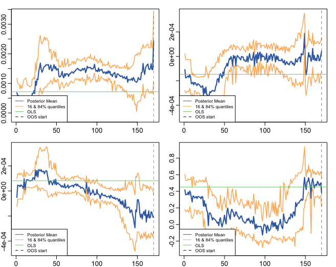

Usage
The following provide instructive examples on how to run MRF to generate forecasts and generalized time-varying parameters (GTVPs).
It is recommended that you see Docs, particularly the MRF module, to get an overview of the hyperparameters. Below we provide examples of how to get started running MRF.
Python
Implementation Example: Simple One-Step Forecasting
First order of business is to import MRF and matplotlib, a useful plotting package:
from MRF import *
import matplotlib.pyplot as plt
As a way to get started, we have included a dataset of simulated variables which is easy to download from Google Drive:
url='https://drive.google.com/file/d/1Sp_2HGdIY0y9m5htlskIbNqWo02FCGNb/view?usp=sharing'
url='https://drive.google.com/uc?id=' + url.split('/')[-2]
simulated_data = pd.read_csv(url, index_col = "index")
We can take a look at this data before we proceed:
display(simulated_data.head(5))
index sim_y sim_x1 sim_x2 sim_x3 ... sim_x14 sim_x15 trend
0 -0.441805 1.262954 -1.045718 -0.390010 ... 0.095309 -0.276508 1
1 2.793370 -0.326233 -0.896211 -1.819222 ... 0.991170 -0.854418 2
2 2.537384 1.329799 1.269387 0.659181 ... 0.428252 1.484950 3
3 1.769591 1.272429 0.593841 0.459622 ... 1.118214 -1.597299 4
4 2.299628 0.414641 0.775634 1.616626 ... -0.739658 0.374999 5
We want to predict sim_y (\(y_t\)) using all variables in our data set (\(S_t\)), but we only want to include the first 3 variables (\(X_t\)) in the linear equation to get time-varying parameters.
### Dependent Variable
my_var = "sim_y"
y_pos = simulated_data.columns.get_loc(my_var)
### Exogenous Variables
S_vars = [f"sim_x{i}" for i in range(1, 16)] + ['trend']
S_pos = [simulated_data.columns.get_loc(s) for s in S_vars]
### Variables Included in Linear Equation
x_vars = ["sim_x1", 'sim_x2', 'sim_x3']
x_pos = [simulated_data.columns.get_loc(x) for x in x_vars]
Let’s say we want to predict the last 50 observations. We can set up our oos_pos as follows:
oos_pos = np.arange(len(simulated_data) - 50 , len(simulated_data)) # lower should be oos start, upper the length of your dataset
If we want to speed things up, we can also select parallelise = True and n_cores = 3 to run the code across 3 cores on our machine.
Warning
Running in parallel across all cores can cause your computer to temporarily slow down
The remaining hyperparameters we have chosen are relatively standard and the user should see Docs if they want to know more details.
Now we are ready to implement:
MRF = MacroRandomForest(data = simulated_data,
y_pos = y_pos,
x_pos = x_pos,
S_pos = S_pos,
B = 100,
parallelise = True,
n_cores = 3,
resampling_opt = 2,
oos_pos = oos_pos,
trend_push = 4,
quantile_rate = 0.3,
print_b = True,
fast_rw = True)
To get this running, we simply need to run the following command:
MRF_output = MRF._ensemble_loop()
Once our function has run through, we can access the output as a dictionary. For example, the following two commands will respectively return the forecasts and betas for the model.
forecasts = MRF_output['pred']
betas = MRF_output['betas']
And we’re done. You now have MRF predictions and GTVPs! Here’s a look at our output:
Firstly, the predictions:
fig, ax = plt.subplots()
plt.rcParams['figure.figsize'] = (20, 8)
# Plotting actual versus original
ax.plot(original_data['sim_y'].loc[oos_pos].shift(1), label = 'Actual', linewidth = 3, color ='mediumseagreen', linestyle = '--')
ax.plot(forecasts, color = 'lightcoral', linewidth = 3, label = "MRF Ensemble")
ax.legend(fontsize = 15)
ax.set_ylabel("Value", fontsize = 15)
ax.grid()
ax.set_xlabel(r"$t$", fontsize = 16)
ax.set_title("OOS predictions of MRF", fontsize = 15)
And, last but not least, the GTVPs:
MRF.band_plots()
Implementation Example: One-Step Macro Forecasting
Let’s say that our goal is to forecast non-farm payrolls one period ahead using the principal components (factors) of the FRED macroeconomic database (FREDMD).
First order of business is to import MRF, seaborn (a useful plotting package) and numPy (for numerical calculations):
from MRF import *
import seaborn as sns
import numpy as np
import statistics as stats
To download the FREDMD data set, we simply need to scrape it from a Google Drive link as follows:
url='https://drive.google.com/file/d/1CB3ljKymznbExcMb9ckO4c2qaBuQxxHB/view?usp=sharing'
url='https://drive.google.com/uc?id=' + url.split('/')[-2]
df = pd.read_csv(url, index_col = "Unnamed: 0").reset_index(drop = True)
We can take a look at this dataset before we proceed:
display(df.head(5))
index PAYEMS PAYEMS.l1 F_1.l1 F_2.l1 F_3.l1 F_4.l1 F_5.l1 MAF_1.l1 MAF_2.l1 MAF_3.l1 trend
1 0.000079 0.000781 -3.448621 -3.757808 2.135087 6.158099 -0.756587 -24.430689 23.652427 -11.180313 1
2 -0.000571 0.000079 -2.437831 1.538254 -1.779137 9.956491 -0.705905 -25.743333 23.104332 -11.575205 2
3 -0.000354 -0.000571 -5.140423 0.261719 -1.144619 7.897809 -0.525376 -27.532826 22.534573 -12.688364 3
4 -0.001737 -0.000354 -4.333899 3.133827 -1.938026 8.523099 -0.204046 -29.392758 21.758538 -13.359394 4
5 -0.001283 -0.001737 -4.135100 0.606762 -0.008077 -0.908704 -1.573666 -31.232862 21.071040 -14.412521 5
We can now go about defining our forecasting setup. Our goal is to forecast non-farm payrolls, so we’ll set that as our dependent variable. As predictors, we’re going to have the first two principal factors and a lag on the dependent variable included in our linear equation (these will be our \(X_t\)). We’re going to make predictions on a one-period forecast horizon:
### Dependent Variable
my_var = "PAYEMS"
y_pos = df.columns.get_loc(my_var)
### Exogenous Variables
x_vars = ["F_1.l1", "F_2.l1", "PAYEMS.l1"]
x_pos = [df.columns.get_loc(x) for x in x_vars]
We’re going to set our out-of-sample position to be only the last value, since we are only interested in predicting the next value for non-farm payrolls.
oos_pos = np.arange(len(df) - 1, len(df))
Now we’re ready to fit MRF! We’re going to pass in the y_pos and x_pos we defined above. We are using ridge_lambda = 0.001 as our ridge regularisation \(\lambda\). We are going to set parallelise = True and n_cores = -1 to run MRF across all cores on our machine in parallel. For descriptions of the other hyperparameters, see Docs.
MRF = MacroRandomForest(data = df,
y_pos = y_pos,
x_pos = x_pos,
B = 1000,
parallelise = True,
n_cores = 3,
resampling_opt = 2,
oos_pos = oos_pos,
trend_push = 6,
quantile_rate = 0.3,
ridge_lambda=0.001,
rw_regul=0.9,
print_b = True,
fast_rw = False)
Now to fit MRF we just need to run:
mrf_output = MRF._ensemble_loop()
That’s it! Our models are fit and the training is finished. All we need to do now is to access our prediction.
pred = float(MRF_output['pred'].values)
print(pred)
0.003268
This gives us our predicted log-difference. Now we have to convert that back to the original units:
y = float(149629 * np.cumprod(np.exp(pred)) - 149629)
print(y)
489.8096
And there we have it, our final forecasted value is 489.8096. If we want, we can also access the pre-ensembled forecasts:
d = [149629 * np.exp(float(value)) - 149629 for value in MRF_output['pred_ensemble']]
print(stats.median(d))
510.3907
Let’s visualise the range of our pre-ensembled forecasts by plotting the distribution:
fig, ax = plt.subplots()
sns.kdeplot(d, ax = ax, color = 'grey', shade = True)
fig.set_size_inches([16, 9])
ax.set_xlabel("Forecast", fontsize = 16)
ax.set_ylabel("Density", fontsize = 16)
ax.set_xlim([0, 1000])
ax.axvline(y, color = 'green', label = "MRF Median")
ax.axvline(423, color = 'blue', label = "Consensus")
ax.axvline(678, color = 'red', label = "First Release")
ax.set_title("Distribution (density) of pre-ensembled forecasts", fontsize = 16)
ax.legend(fontsize = 16)
We can also look at the GTVPs to visualise the change in the coefficients corresponding to the constant (\(\beta_{0,t}\), top-left), the lagged dependent variable (\(\beta_{1,t}\), top-right) and the two principal factors (\(\beta_{2,t}\) and \(\beta_{3,t}\), bottom).

Implementation Example: Financial Trading
To start with, let’s read in one of our finance datasets:
url='https://drive.google.com/file/d/1JANqsAU4Dz8FzHRcdN8x1aakw9FCJU_1/view?usp=sharing'
url='https://drive.google.com/uc?id=' + url.split('/')[-2]
data_in = pd.read_csv(url, index_col = "index")
We can take a look at this data using display(data_in.head(5)):
Date spy_close spy_1d_returns VIX_slope yc_3m yc_10y yc_slopes_3m_10y 5Ewm 15Ewm MACD trend
24/01/2013 1494.82 -0.002 -0.001 0.00 0.02 0.001 2.654 2.340 -11.071 1
25/01/2013 1502.96 0.005 -0.001 0.00 0.10 0.001 4.483 3.065 -12.489 2
28/01/2013 1500.18 -0.007 -0.002 -0.01 0.02 0.001 2.062 2.334 -12.216 3
29/01/2013 1507.84 0.007 0.002 0.00 0.03 0.001 3.928 3.000 -13.144 4
30/01/2013 1501.96 -0.009 -0.003 0.00 0.00 0.001 0.659 1.890 -11.913 5
Since we are not going to predict the price, but rather the return, we need to assign our prices to a new variable (we will use it later) and remove it from our dataframe containing \([y_t, X_t, S_t]\):
close_prices = data_in['spy_close']
data_in = data_in.iloc[:, 1:]
We want to have a backtest (oos) period in order to evaluate MRF, so we are going to set up our out-of-sample period to include the last 350 observations:
oos_pos = np.arange(len(data_in[:-350]), len(data_in[:-1])+1)
Now for the MRF specification:
MRF = MacroRandomForest(data = data_in,
y_pos = 0,
x_pos = np.arange(1, 5),
fast_rw = True,
B = 50,
mtry_frac = 0.3,
resampling_opt = 2,
oos_pos = oos_pos,
trend_push = 2,
quantile_rate = 0.3,
parallelise = True)
And the MRF fitting:
mrf_output = MRF._ensemble_loop()
Now we can automatically evaluate the financial performance of MRF using the financial_evaluation() function. This function will return 5 outputs: 1) The daily profit series associated with the induced strategy, 2) The cumulative profit series, 3) The annualised return, 4) The Sharpe ratio and 5) The maximum drawdown. These metrics are outlined in Evaluation.
trading_statistics = MRF.financial_evaluation(model_forecasts = mrf_output['pred'],
close_prices = close_prices)
daily_profit = trading_statistics[0]
cumulative_profit = trading_statistics[1]
annualised_return = trading_statistics[2]
sharpe_ratio = trading_statistics[3]
maximum_drawdown = trading_statistics[4]
We can also get out a useful plot that compares the financial trading performance of MRF (green) versus 100 “monkey traders” that implement the same strategy (grey) and a “buy and hold” strategy on the S&P 500 (blue).
MRF.monkey_trader_plot(close_prices)

And voila, you have a fully trained and backtested model. You are ready to deploy your MRF-guided trading strategy.
R
Implementation Example: Simple One-Step Forecasting
As a way to get started, we can run a simulation to create a simple synthetic data set:
set.seed(0)
data=matrix(rnorm(15*200),200,15)
#DGP
library(pracma)
X=data[,1:3]
y=crossprod(t(X),rep(1,3))*(1-0.5*I(c(1:200)>75))+rnorm(200)/2
trend=1:200
data.in=cbind(y,data,trend)
We can take a look at this data before proceeding.
head(data.in)
[1,] -0.4418048 1.2629543 -1.0457177 ... 0.09530868 -0.2765078 1
[2,] -2.7933695 -0.3262334 -0.8962113 ... 0.99117035 -0.8544175 2
[3,] 2.5373841 1.3297993 1.2693872 ... 0.42825204 1.4849503 3
[4,] 1.7695908 1.2724293 0.5938409 ... 1.11821352 -1.5972987 4
[5,] 2.2996275 0.4146414 0.7756343 ... -0.73965815 0.3749989 5
[6,] -1.5550883 -1.5399500 1.5573704 ... -2.06393339 1.3272442 6
Let’s say we want to predict the last 50 observations. We can set up our oos_pos as follows:
oos_position = nrow(data.in)-50: nrow(data.in)
Once we have made our data set, we are ready to run MRF. We need to specify the position of our desired \(y_t\). In our case, this variable is in the first column, so we will set y.pos = 1. Our desired \(X_t\) are in index positions 1, 2 and 3, since we want our first 3 predictors to be time-varying, so we will pass x.pos = 2:4. S_pos we will pass as S.pos = 2:ncol(data.in), since we want all of our extra exogenous variables to be included in our overall predictor set \(S_t\).
The remaining hyperparameters we have chosen are relatively standard and the user should see Docs if they want to know more details.
mrf.output = MRF(data = data.in,
y.pos = 1,
x.pos = 2:4,
S.pos = 2:ncol(data.in),
oos.pos = oos_position,
mtry.frac = 0.25,
trend.push = 4,
quantile.rate = 0.3,
B = 100)
And we’re done. You now have MRF predictions and GTVPs! Here’s a look at our output:

Implementation Example: One-Step Macro Forecasting
Let’s say that our goal is to forecast non-farm payrolls one period ahead using the FRED macroeconomic database (FREDMD).
Let’s firstly load MRF. We will also load the fbi package, which let’s us read and manipulate FRED data, and several other useful libraries.
library(MacroRF)
library(fbi)
library(tidyverse)
library(lubridate)
library(vars)
library(pracma)
We are also going to initialise the select method, which comes from the dplyr package. This will be useful for data manipulation:
select <- dplyr::select
With the boring stuff out of the way, let’s go about creating our forecasting setup.
Our goal is to forecast non-farm payrolls, so we’ll set that as our dependent variable. As predictors, we’re going to have 5 factors of the FREDMD database with the first three (our \(X_t\)) included in our linear equation, all at a lag of one. Our data is going to start on Jan 1st 2003 and we’re going to make predictions on a one-period forecast horizon:
### Dependent variable from FRED
my_var <- "PAYEMS"
### Number of factors
my_k <- 5
### First number of factors in linear eqn
my_x <- 3
### Lags
my_p <- 1
### Start Date
start_date <- "2003-01-01"
### Forecast Horizon
hor <- 1
With our forecasting setup defined, let’s read the data from FRED:
# Reading the data from FRED
df <- fredmd(file = "https://files.stlouisfed.org/files/htdocs/fred-md/monthly/2022-02.csv",
transform = TRUE,
date_start = ymd(start_date))
# Reading column names from FRED
df_for_names <- read_csv("https://files.stlouisfed.org/files/htdocs/fred-md/monthly/2022-02.csv")
Taking a look at the data frame, we have 229 rows and 127 columns (not all shown here). This dataframe starts from index 529 because we have sliced the FREDMD database:
print(head(df))
RPI W875RX1 DPCERA3M086SBEA ... INVEST VIXCLSx
529 -0.0032978454 -0.004065960 -0.0001315782 ... -0.020117881 30.6685
530 -0.0037021507 -0.003959223 -0.0032350855 ... -0.002235762 35.1947
531 0.0017066104 0.001560944 0.0057321149 ... -0.002235762 35.1947
532 0.0046942035 0.004801033 0.0047141822 ... 0.001445046 27.1423
533 0.0077470739 0.007832646 0.0032133589 ... 0.009581121 22.5485
534 0.0035093161 0.003418945 0.0053366834 ... -0.002602376 22.3490
535 0.0009887095 0.000777240 0.0045115509 ... -0.017077098 21.2068
Let’s process the data, including handling outliers and missing values:
# Setting column names
colnames(df) <- colnames(df_for_names)
# Removing outliers in the series
df <- rm_outliers.fredmd(df)
df[["sasdate"]] <- NULL
# Handling missing values
imputed <- tw_apc(X = df,
kmax = my_k,
center = TRUE,
standardize = TRUE)
Let’s set up our matrix of factors using principal component analysis (PCA):
# Decomposing the data matrix into sparse, low-rank components
afm <- rpca(X = imputed[["data"]],
kmax = my_k,
standardize = TRUE)
# Establishing and scaling robust PCA factors - the variables for our forecast
Fmat <- prcomp(scale(imputed[["data"]]), rank. = my_k)$x
# Encoding the predictors
ma_mat <- embed(scale(imputed[["data"]]), 60)
# Merge the matrices
ma_mat <- cbind(scale(imputed[["data"]]) %>% tail(nrow(ma_mat)), ma_mat)
# Decomposing the data matrix into sparse, low-rank components
MAFmat <- prcomp(ma_mat, rank. = my_x)$x
Let’s set up our variables for easy access:
set.seed(1234)
n <- nrow(MAFmat)
idx <- which(colnames(df) == my_var)
X <- imputed[["data"]][, idx]
X <- tail(X, n)
Fmat <- tail(Fmat, n)
Y <- cbind(X, Fmat, MAFmat)
colnames(Y) <- c(my_var, paste0("F_", 1:my_k), paste0("MAF_", 1:my_x))
We can now take a look at our input data:
print(Y)
PAYEMS F_1 F_2 F_3 F_4 F_5 MAF_1 MAF_2 MAF_3
1 0.0007806966 -3.448621 -3.7578079 2.135086615 6.1580987 -0.75658675 -24.43069 23.65243 -11.18031
2 0.0000794812 -2.437831 1.5382544 -1.779136678 9.9564912 -0.70590524 -25.74333 23.10433 -11.57520
3 -0.0005709598 -5.140423 0.2617188 -1.144619273 7.8978095 -0.52537640 -27.53283 22.53457 -12.68836
4 -0.0003543035 -4.333899 3.1338272 -1.938025976 8.5230994 -0.20404637 -29.39276 21.75854 -13.35939
5 -0.0017371797 -4.135100 0.6067619 -0.008076702 -0.9087045 -1.57366593 -31.23286 21.07104 -14.41252
6 -0.0012831063 -1.806275 3.6440667 -2.393721847 -3.3302690 -0.02333614 -32.65311 20.01826 -14.79434
Since we’re doing regression, we need lag our variables by 1 (our chosen lag):
Y_temp <- Y[c(1:nrow(Y), nrow(Y)), ]
mat <- VAR(Y_temp, p = my_p, type = "trend")[["datamat"]] %>%
as.data.frame() %>%
select(my_var, contains(".l"), trend) # accessing the data model of VAR (lags our variables 1)
rownames(mat) <- NULL
Thus our final input data is as follows:
PAYEMS PAYEMS.l1 F_1.l1 F_2.l1 F_3.l1 F_4.l1 F_5.l1 MAF_1.l1 MAF_2.l1 MAF_3.l1 trend
1 0.0000794812 0.0007806966 -3.448621 -3.7578079 2.135086615 6.1580987 -0.75658675 -24.43069 23.65243 -11.18031 1
2 -0.0005709598 0.0000794812 -2.437831 1.5382544 -1.779136678 9.9564912 -0.70590524 -25.74333 23.10433 -11.57520 2
3 -0.0003543035 -0.0005709598 -5.140423 0.2617188 -1.144619273 7.8978095 -0.52537640 -27.53283 22.53457 -12.68836 3
4 -0.0017371797 -0.0003543035 -4.333899 3.1338272 -1.938025976 8.5230994 -0.20404637 -29.39276 21.75854 -13.35939 4
5 -0.0012831063 -0.0017371797 -4.135100 0.6067619 -0.008076702 -0.9087045 -1.57366593 -31.23286 21.07104 -14.41252 5
6 -0.0012411767 -0.0012831063 -1.806275 3.6440667 -2.393721847 -3.3302690 -0.02333614 -32.65311 20.01826 -14.79434 6
Next we need to choose which variables we want to include in our linear equation (to generate GTVPs). Here, we’re going to choose \(X_t\) to include the lag of the dependent variable and the lag on the first 2 factors (F_1 and F_2). These are positioned at columns 2,3 and 4 respectively:
And with all of that out of the way, it’s time to fit MRF!
x_pos = c(2,3,4)
model <- MRF(mat,
x.pos = x_pos,
oos.pos = nrow(mat),
ridge.lambda = .001,
rw.regul = .9,
trend.push = 6,
B =1000,
quantile.rate = 0.3,
fast.rw = TRUE)
That’s it! Our models are fit and the training is finished. All we need to do now is to access our predictions.
preds <- model[["pred"]]
print(preds)
[1] 0.00330464
This gives us our predicted log-difference. Now we have to convert that back to the original units:
y <- 149629 * cumprod(exp(preds)) - 149629 # Our final forecast!
print(y)
[1] 495.2879
And there we have it, our final forecasted value is 495.2879. If we want, we can also access the pre-ensembled forecasts:
d <- 149629 * exp(model$pred.ensemble) - 149629
d_df <- data.frame(d)
print(median(d))
[1] 510.0469
Let’s visualise the range of our pre-ensembled forecasts by plotting the distribution:
ggplot(d_df) +
theme_bw() +
aes(x = d) +
geom_density(adjust = 2,fill = "grey") +
xlim(c(0, 1000)) +
theme(plot.background = element_rect(fill = "transparent", colour = NA))+
ggtitle("Distribution (density) of pre-ensembled forecasts") +
theme(plot.title = element_text(hjust = 0.5)) +
geom_vline(aes(xintercept = 423, color = 'Consensus'))+
geom_vline(aes(xintercept = 678, color = 'First Release')) +
geom_vline(aes(xintercept = median(d), color = 'MRF Median'))+
labs(x = "Forecast", y = 'Density', color ="Legend") +
scale_color_manual(values = colors) +
theme(legend.position="bottom", legend.box.background = element_rect(colour = "black"))
We can also look at the GTVPs to visualise the change in the coefficients corresponding to the constant (\(\beta_{0,t}\), top-left), the lagged dependent variable (\(\beta_{1,t}\), top-right) and the two principal factors (\(\beta_{2,t}\) and \(\beta_{3,t}\), bottom).
